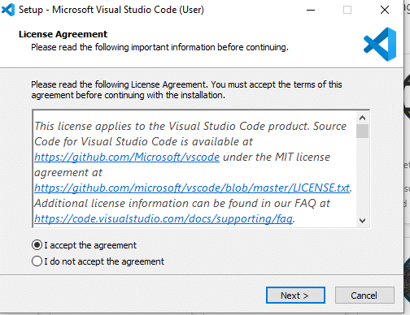
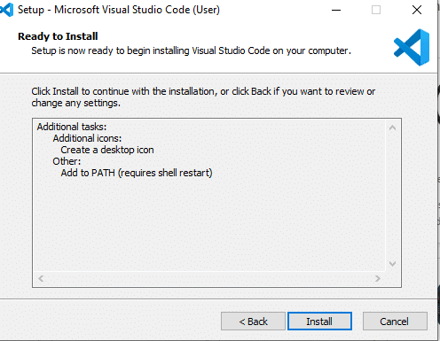
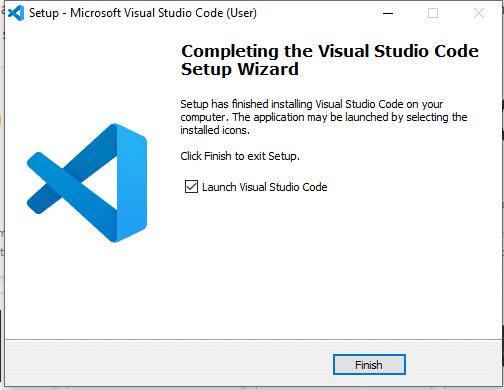

Visual Studio Code is a free code editor, which runs on the MacOS, Linux, and Windows operating systems.
You can download Visual Studio code from this URL: “https://code.visualstudio.com/download”. After opening the link, select 'Windows' or 'MacOS' as per the operating system. It will start installing.
If you are downloading for Windows, then follow these steps:
The developer tools console is one of the most powerful tools available to you when it comes to debugging your front-end web applications.
The console has an API that provides a number of methods that make debugging easier.
How to use it?
Developers use 'console.log( )' to print something on the Console.